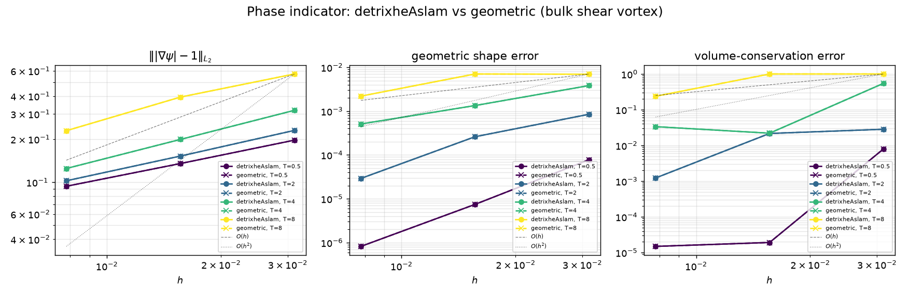
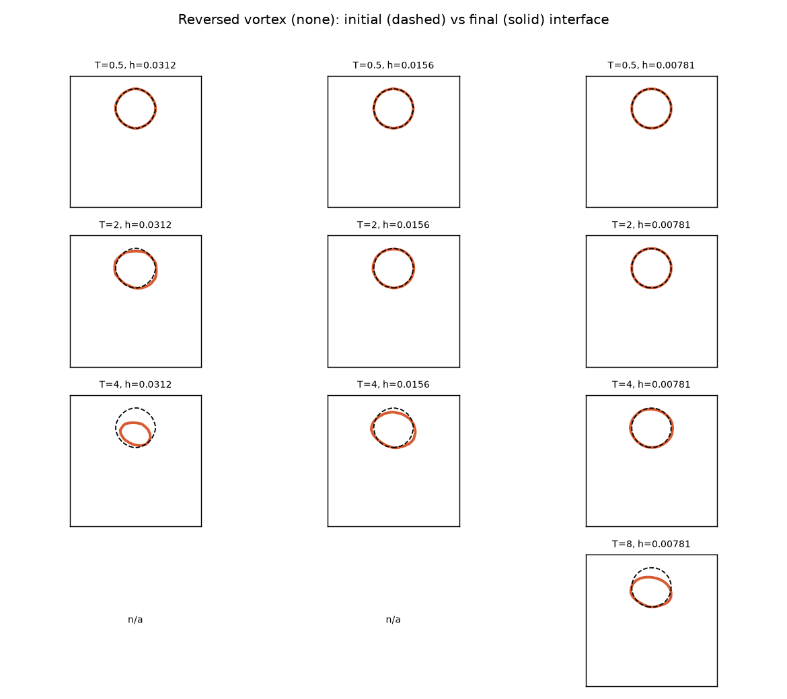
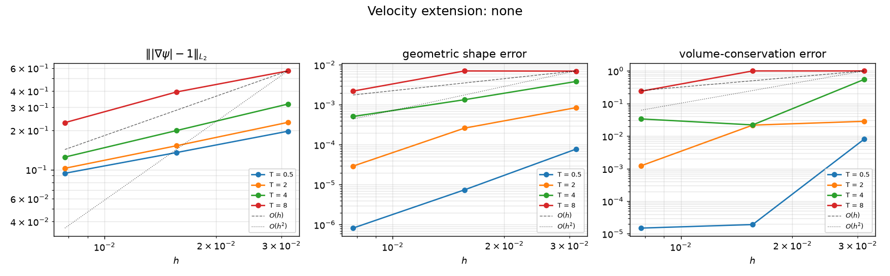
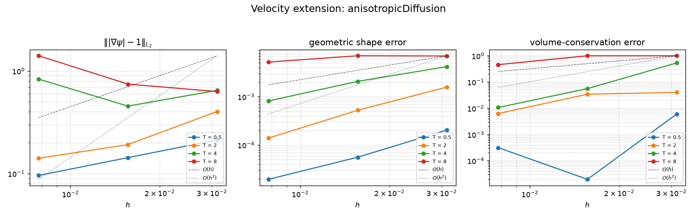
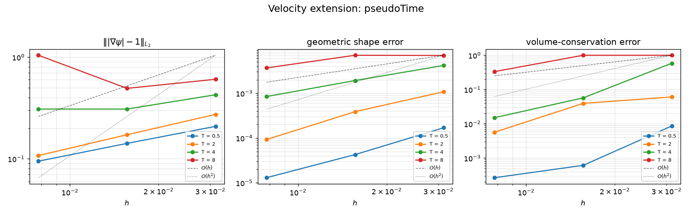
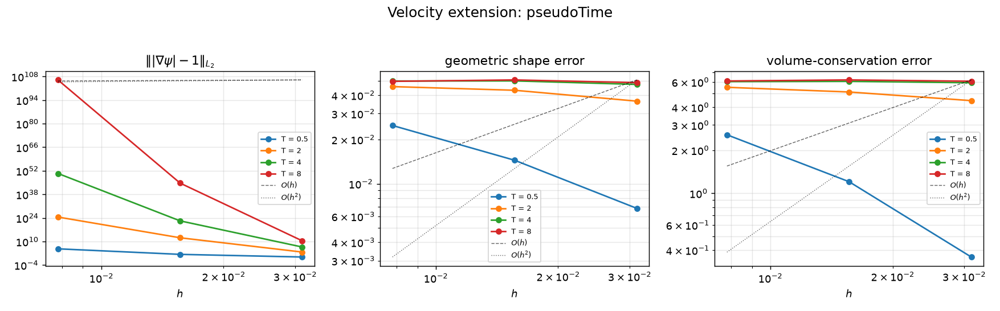

Velocity extension
geometric Heaviside · analytic volume fractions · interface-normal velocity extension
Tomislav Marić · Julian Reitzel · Mathis Fricke · Dieter Bothe
MMA, TU Darmstadt
libleiaLevelSet | solvers leiaLevelSetFoam, leiaLevelSetTwoPhaseFoam
Authors: T. Marić · J. Reitzel · M. Fricke · D. Bothe — MMA, TU Darmstadt
Signed-distance field \(\psi(\mathbf{x},t)\):
\[ \Sigma = \{\mathbf{x} : \psi = 0\}, \quad \Omega^{-}=\{\psi<0\} \;(\text{phase A}) \]Signed-distance property
\[ |\nabla\psi| = 1 \]Distance to \(\Sigma\); sign encodes the phase.
Conservative transport of the level set:
\[ \frac{\partial \psi}{\partial t} + \nabla\!\cdot(\mathbf{u}\,\psi) = S \]discretised with the finite-volume flux \(\phi = (\mathbf{u}_f\cdot\mathbf{S}_f)\):
fvm::ddt(psi) + fvm::div(velExt->phi(), psi) == source->fvmsdplsSource(psi, U)Volume fraction of phase A in cell \(c\):
\[ \alpha_c = \frac{1}{|\Omega_c|}\int_{\Omega_c} H(-\psi)\,\mathrm{d}V, \qquad H(s)=\begin{cases}1 & s>0\\ 0 & s\le 0\end{cases} \]Problem: an algebraic Heaviside of the transported \(\psi\)
Both assumptions are violated by advection.
Per cell, build a linear reconstruction of \(\psi\):
\[ \psi^{\ell}_c(\mathbf{x}) = \mathbf{n}_c\cdot\mathbf{x} + d_c \]then compute \(\alpha_c\) as the fraction of the cell below that plane.
Shared code: levelSetPlaneReconstruction
Fit the plane over cell \(c\) and its neighbours \(N_c\) by least squares:
\[ \min_{\mathbf{n}_c,\,d_c}\; \sum_{k\in\{c\}\cup N_c}\big(\psi_k-(\mathbf{n}_c\cdot\mathbf{x}_k+d_c)\big)^2 \]Normal equations — a \(4\times4\) system for \((n_x,n_y,n_z,d_c)\):
\[ \left[\begin{array}{cccc} \sum x_k^2 & \sum x_k y_k & \sum x_k z_k & \sum x_k \\ \sum x_k y_k & \sum y_k^2 & \sum y_k z_k & \sum y_k \\ \sum x_k z_k & \sum y_k z_k & \sum z_k^2 & \sum z_k \\ \sum x_k & \sum y_k & \sum z_k & N \end{array}\right] \!\begin{bmatrix} n_x\\ n_y\\ n_z\\ d_c \end{bmatrix} =\begin{bmatrix} \sum \psi_k x_k\\ \sum \psi_k y_k\\ \sum \psi_k z_k\\ \sum \psi_k \end{bmatrix} \]2D fix: in an empty direction, row/col is decoupled and \(n_{\text{cmpt}}\!=\!0\)
is pinned → keeps the \(4\times4\) system non-singular (mesh.geometricD()).
geometricPhaseIndicator — clip the cell against the plane
The below-plane sub-volume is found by polygon/polyhedron intersection (divergence-theorem volume of the clipped cell).
Decompose the cell into tets (cell centroid \(\mathbf{x}_c\), face centroid \(\mathbf{x}_f\), face-edge vertices):
Sort vertex distances \(\psi_1\!\le\!\psi_2\!\le\!\psi_3\!\le\!\psi_4\). Fraction of the tet in \(\Omega^{-}\):
Assemble the cell value as the tet-volume-weighted mean:
\[ \alpha_c = \frac{\sum_t f_t\,V_t}{\sum_t V_t} \]Tolerance-free: the denominators are cross-interface distance gaps, bounded away from zero, so there is no clipping tolerance — it matches the polygon clipping to machine precision on the same plane, and stays robust in 2D.
The middle (two-in / two-out) case uses the corrected \(\Omega^{-}\) form — the paper's printed numerator gives the complement.

Bulk shear vortex, velocity extension none. Both
integrate the same LLS plane, so they agree to round-off: the gradient error is
identical (ψ-advection is indicator-independent), shape/volume differ by
\(\lesssim\!10^{-10}\). detrixheAslam is the tolerance-free, 2D-robust choice.
Only motion along the interface normal moves \(\Sigma\). The cell-centred \(\mathbf{U}\) varies along \(\mathbf{n}\), so advecting \(\psi\) with it changes the spacing of the level sets and breaks \(|\nabla\psi|=1\). The extension velocity \(\mathbf{U}_{\text{ext}}\) removes that variation, \((\mathbf{n}\cdot\nabla)\,\mathbf{U}_{\text{ext}}=0\), so each normal ray is advected rigidly.
\(\mathbf{x}_\Sigma\) is the closest point on \(\Sigma\) to the cell centre — the orthogonal projection:
\[ \mathbf{x}_\Sigma=\operatorname*{arg\,min}_{\mathbf{y}\in\Sigma}\|\mathbf{x}_c-\mathbf{y}\| \]Approximate it by steepest descent on \(\psi\) (\(\mathbf{n}=\nabla\psi/|\nabla\psi|\)):
\[ \mathbf{x} \leftarrow \mathbf{x} - \psi(\mathbf{x})\,\mathbf{n} \]Exact in one step only for a true signed distance; otherwise the iterate \(\tilde{\mathbf{x}}\) lands near \(\mathbf{x}_\Sigma\) with an approximation error.
Then \(\mathbf{U}_\Sigma=\operatorname{interp}(\mathbf{U},\tilde{\mathbf{x}})\) — IDW cell-point interpolation.
interfaceExtension: seed cells = the single layer with \(0<\alpha<1\).
Goal: \((\mathbf{n}\cdot\nabla)\mathbf{U}_{\text{ext}}=0\) off \(\Sigma\), with \(\mathbf{U}_{\text{ext}}=\mathbf{U}_\Sigma\) at the interface layer (Dirichlet).
Anisotropic harmonic
\[ \nabla\!\cdot\!\big(\mathbf{D}\,\nabla\mathbf{U}_{\text{ext}}\big)=0 \] \[ \mathbf{D}=\mathbf{n}\otimes\mathbf{n}+\varepsilon\,\mathbf{I} \]whole domain, zeroGradient outer BC; PCG/DIC.
Pseudo-time (Adalsteinsson–Sethian)
\[ \frac{\partial \mathbf{U}_{\text{ext}}}{\partial\tau} + \operatorname{sign}(\psi)\,(\mathbf{n}\cdot\nabla)\mathbf{U}_{\text{ext}}=0 \]implicit backward Euler, upwind; \(n_{\text{iter}}\) marches.
Each model gets its own slides next: definition → discretization →
verbatim solver code. The interface layer is imposed as Dirichlet directly in the
assembled matrix via fvMatrix::setValues — no submesh.
none — definition (baseline)No extension is built. The advecting velocity is the prescribed field itself, so the level set is advected with the exact, (near-)divergence-free flux \(\phi\):
\[ \mathbf{U}_{\text{ext}} = \mathbf{U}, \qquad \phi_{\text{ext}} = \phi \]The reference against which the two genuine extension models are measured — and, as the results show, the most accurate choice on a prescribed divergence-free field.
none — discretization (UFVM)No linear system is assembled — correct() re-syncs the registry
fields each step (after the oscillation rescaling of \(\mathbf{U}\), \(\phi\)):
The \(\psi\)-equation advects with fvm::div(velExt->phi(), psi) = the exact
prescribed div(phi, psi), which is discretely divergence-free — the
property that keeps it stable and conservative.
Source — base class registered as the none type:
src/leiaLevelSet/velocityExtension/velocityExtension.C
→ velocityExtension::correct()
none — solver code (\(\psi\) advection)// non-invasive: U/phi are never mutated; advect psi with velExt->phi().
// For "none", correct() simply re-syncs: Uext == U; phiExt == phi;
velExt->correct();
// Defect-correction loop: each pass re-assembles with the LATEST psi so the
// deferred (linearUpwind - upwind) correction converges (~2-3 passes -> 2nd
// order). Safe: fvm::ddt reuses psi.oldTime(), fixed within the step.
const label nDefCorr =
runTime.controlDict().getOrDefault<label>("nDefCorr", 2);
for (label corr = 0; corr < nDefCorr; ++corr)
{
fvScalarMatrix psiEqn
(
fvm::ddt(psi)
+ fvm::div(velExt->phi(), psi) // Gauss linearUpwind grad(psi)
==
source->fvmsdplsSource(psi, U)
);
psiEqn.solve();
}
applications/solvers/leiaLevelSetFoam/leiaLevelSetFoam.C.
grad(psi) = cellLimited leastSquares 1;
div(phi,psi) = Gauss linearUpwind grad(psi).
anisotropicDiffusion — definitionExtend the interface velocity \(\mathbf{U}_\Sigma\) off \(\Sigma\) by diffusion that acts only along the normal (normal-aligned harmonic extension):
\[ \nabla\!\cdot\!\big(\mathbf{D}\,\nabla\mathbf{U}_{\text{ext}}\big)=0, \qquad \mathbf{D}=\mathbf{n}\otimes\mathbf{n}+\varepsilon\,\mathbf{I} \]\(\mathbf{n}\otimes\mathbf{n}\) diffuses along \(\mathbf{n}\) (making \(\mathbf{U}_{\text{ext}}\) normal-constant); \(\varepsilon\mathbf{I}\) regularizes the tangential/empty directions. Dirichlet \(\mathbf{U}_{\text{ext}}=\mathbf{U}_\Sigma\) at the interface seed layer.
anisotropicDiffusion — discretization (UFVM)sqr(nHat) + eps*I (volSymmTensorField),
with \(\mathbf{n}=\) fvc::grad(psi)/|grad psi|fvm::laplacian(D, Uext)fvMatrix::setValues(seedCells, UΣ) — no submeshPCG/DIC, one solve; zeroGradient outer BCSource: src/leiaLevelSet/velocityExtension/anisotropicDiffusion.C → anisotropicDiffusion::extend(); shared seed/band/flux backbone in interfaceExtension.C.
anisotropicDiffusion::extend() — codevoid Foam::anisotropicDiffusion::extend()
{
// D = n (x) n + eps I (diffuse along the normal; eps regularizes)
volSymmTensorField D
(
IOobject("velExtD", /* ... */),
sqr(nHat_) + dimensionedSymmTensor("eps", dimless, epsilon_*symmTensor::I)
);
fvVectorMatrix UextEqn(fvm::laplacian(D, Uext_));
// Dirichlet only at the single interface layer, directly in the matrix:
forAll(seedCells_, i)
{
fixedCells.append(seedCells_[i]);
fixedVals.append(Uext_[seedCells_[i]]); // = U_Sigma
}
UextEqn.setValues(fixedCells, fixedVals);
// symmetric matrix -> PCG/DIC, one solve; zeroGradient outer BC.
UextEqn.solve(solverControls); // solver=PCG, preconditioner=DIC
}Whole-domain harmonic solve; no submesh — the seed layer is the only constraint.
pseudoTime — definition (Adalsteinsson–Sethian)March \(\mathbf{U}_{\text{ext}}\) to the steady state of a pseudo-time transport that carries \(\mathbf{U}_\Sigma\) outward along the normals on both sides of \(\Sigma\):
\[ \frac{\partial \mathbf{U}_{\text{ext}}}{\partial\tau} + \operatorname{sign}(\psi)\,(\mathbf{n}\cdot\nabla)\,\mathbf{U}_{\text{ext}}=0 \]Dirichlet \(\mathbf{U}_{\text{ext}}=\mathbf{U}_\Sigma\) at the interface seed layer; \(n_{\text{iter}}\) pseudo-time steps set the reach. The direction \(\mathbf{w}=\operatorname{sign}(\psi)\,\mathbf{n}\) flips across \(\Sigma\) and is not divergence-free — which forces the non-conservative discretization.
pseudoTime — discretization (UFVM, implicit backward Euler)phiW = fvc::interpolate(w) & SfrDtau = 1/(deltaTau*V^(1/3));
upwind convection → stable, positive diagonalsetValues(seedCells, UΣ);
PBiCGStab/DILU, one solve per iterationSource: src/leiaLevelSet/velocityExtension/pseudoTime.C → pseudoTime::extend(); shared seed/band/flux backbone in interfaceExtension.C.
pseudoTime::extend() — code (non-conservative)void Foam::pseudoTime::extend()
{
// w = sign(psi) n (outward, NOT divergence-free)
forAll(w, c) w[c] = ((psi_[c] < 0) ? -1.0 : 1.0)*nHat_[c];
const surfaceScalarField phiW("velExtPhiW", fvc::interpolate(w) & mesh_.Sf());
forAll(rDtau, c) rDtau[c] = 1.0/(deltaTau_*Foam::pow(mesh_.V()[c], 1.0/3.0));
// NON-CONSERVATIVE: (w.grad)Uext = div(phiW,Uext) - Uext*(div phiW)
const volScalarField divW("velExtDivW", fvc::div(phiW));
for (label it = 0; it < nIterations_; ++it)
{
fvVectorMatrix UextEqn
(
fvm::Sp(rDtau, Uext_)
+ fv::gaussConvectionScheme<vector>
(mesh_, phiW, new upwind<vector>(mesh_, phiW)).fvmDiv(phiW, Uext_)
- fvm::Sp(divW, Uext_)
== rDtau*Uext_
);
UextEqn.setValues(fixedCells, fixedVals); // seed Dirichlet
UextEqn.solve(solverControls); // PBiCGStab/DILU
}
}The - fvm::Sp(divW, Uext_) term converts the
conservative flux divergence into the advective \((\mathbf{w}\!\cdot\!\nabla)\) derivative
an extension needs.
AUTO_WRITE)
and advection flux \(\phi_{\text{ext}}\).none = identity (\(\mathbf{U}_{\text{ext}}\!=\!\mathbf{U}\)).Signed-distance error \(e = \big|\,|\nabla\psi| - 1\,\big|\) (gradPsiError)
Volume-weighted norms (gradPsiErrorCSV):
\[ L_1 = \frac{\sum_c e_c V_c}{\sum_c V_c}, \qquad L_2 = \sqrt{\frac{\sum_c e_c^2 V_c}{\sum_c V_c}} \]reported globally and over the narrow band, per time step to CSV.
Plus, from the solver: geometric shape error and volume-conservation error.
Bulk reversed single vortex. Circle \(R=0.15\) at \((0.5,0.75)\) in the unit box, advected by the reversing single-vortex field (scaled by \(\cos(\pi t/T)\)); at \(t=T\) it should return to its initial shape.
none / anisotropicDiffusion / pseudoTime).mpirun or SLURM.Error measures (final time, vs the initial field \(\alpha^{0}\)):
A separate convergence diagram follows for each velocity-extension model. Figures auto-generated each run (foamlib + matplotlib).

Bulk vortex (velocity extension: none) — initial (dashed) vs
final (solid) \(\alpha=0.5\) contour; rows: period \(T\); columns: mesh spacing
\(h\). Tight overlap ⇒ the flow reverses cleanly; thin filaments at large \(T\) /
coarse \(h\) are under-resolved.
none
Baseline: advect \(\psi\) with the exact prescribed flux. \(E_{\nabla\psi}\), \(E_{\text{shape}}\), \(E_{\text{vol}}\) vs \(h\), one line per period \(T\); \(O(h)\)/\(O(h^2)\) guides.
anisotropicDiffusion
Interface velocity extended by
\(\nabla\!\cdot(\mathbf{D}\,\nabla\mathbf{U}_{\text{ext}})=0\),
\(\mathbf{D}=\mathbf{n}\otimes\mathbf{n}+\varepsilon\mathbf{I}\). Same axes as above;
bounded and shape-convergent, close to none.
pseudoTime
With linearUpwind + defect correction + the non-conservative form, pseudoTime is now bounded and comparable to the other models (\(E_{\nabla\psi}\!\lesssim\!1\) even at \(T=8\)); shape error converges near second order. The \(E_{\text{vol}}\!\to\!1\) points at \(T=8\)/coarse \(h\) are the sub-grid-filament resolution limit (identical across all models), not instability.
none advects ψ with the prescribed flux \(\phi\), which is discretely
~divergence-free ⇒ stable, conservative, accurate. Both extensions rebuild
\(\phi_{\text{ext}}=\operatorname{interp}(\mathbf{U}_{\text{ext}})\!\cdot\!\mathbf{S}_f\),
which breaks that. Written out, ψ obeys
Two discretization issues compounded it: central
Gauss linear advection of \(\psi\) (dispersive wiggles), and
pseudoTime discretizing the non-solenoidal
\(\mathbf{w}=\operatorname{sign}(\psi)\mathbf{n}\) in conservative form
(spurious \(\mathbf{U}_{\text{ext}}\) compression) → the \(\sim\!10^{108}\)
blow-up. aniso stayed bounded (max-principle harmonic solve) but degraded with \(T\).
- fvm::Sp(fvc::div(phiW), Uext_) in
pseudoTime::extend(). Kills the \(10^{108}\) blow-up.Gauss linearUpwind grad(psi) with
grad(psi) = cellLimited leastSquares 1, inside a
defect-correction loop (nDefCorr) in
leiaLevelSetFoam.C — deferred correction → ~2nd order, no
central wiggles.maxScale\(\cdot\max|\mathbf{U}|\)
(clipExtended()).pseudoTime — before (unstable)

pseudoTime — after fixes
The catastrophic \(\sim\!10^{108}\) blow-up is gone:
pseudoTime is now bounded, \(E_{\nabla\psi}\lesssim1\) even at
\(T=8\)/fine \(h\), and all three models are comparable (gradient error
\(\sim0.1\!-\!1.4\), shape error near second order). The only \(E_{\text{vol}}\!\to\!1\)
points are \(T=8\)/coarse \(h\) — the sub-grid-filament resolution limit,
identical across none / aniso / pseudoTime, not instability. For a
prescribed divergence-free field none stays optimal — extension
pays off only when \(\mathbf{U}\) is a flow solution (two-phase).
Runtime Model Selection
The maths and discretization of every model are settled. This section shows how they plug together: one runtime-selectable object per concept, chosen from a dictionary, discovered from the object registry.
New(const fvMesh&)geometric, detrixheAslam, heavisidefvSolution:psi, alpha, NarrowBand, nc)
discovered from the object registry by configurable name keys.RTS + object registry = pluggable, KISS.
One library of runtime-selectable models feeds two thin solvers; a Snakemake suite verifies them.
The velocity-extension hierarchy is runtime-selected (open/closed): a new model is a new class, no edits to existing ones.
TypeName("myModel"); + a (const fvMesh&) constructor.addToRunTimeSelectionTable(velocityExtension, myModel, Mesh);extend() (fill Uext_ in the
band from the pinned seed layer)..C to src/leiaLevelSet/Make/files;
wmake.levelSet{ velocityExtension{ type myModel; } }.Templates: anisotropicDiffusion.C (one linear solve) and pseudoTime.C (iterative march).
// myExtension.H
class myExtension : public interfaceExtension
{
public:
TypeName("myModel");
explicit myExtension(const fvMesh& mesh) : interfaceExtension(mesh) {}
virtual ~myExtension() = default;
protected:
virtual void extend() override; // the only thing a model must define
};
// myExtension.C
addToRunTimeSelectionTable(velocityExtension, myExtension, Mesh);
void Foam::myExtension::extend()
{
// seedCells_ already hold U_Sigma (Dirichlet); nHat_, band_ are built.
// Propagate Uext_ through the band so (n . grad) Uext = 0, seed pinned.
// e.g. fvm::laplacian(...) / fvm::div(...) + fvMatrix::setValues(seedCells_, ...).
}No existing model, solver, or case is modified — only a
new class + a Make/files line + a dictionary type.